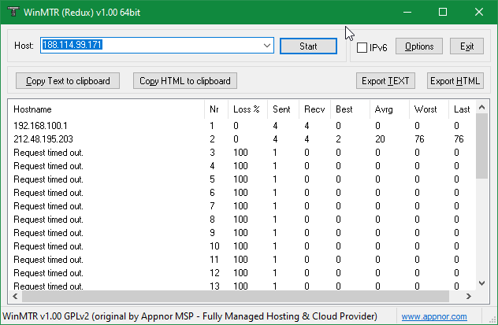

Здравствуйте. Не открываются сайты, использующие IP-адреса 188.114.97.2, 188.114.96.2, принадлижащие Cloudflare.
Проблема выявлена на провайдере с ТСПУ.
Полагаю, что речь о Билайне, а не о всех провайдерах с ТСПУ? Если это так, то, возможно, это утечка заблокированных маршрутов через внутренний BGP-пиринг Билайна, разбираюсь.
Эта проблема есть в том числе на Ростелекоме. И https://globalcheck.net/ показывает интересные результаты…
Проблемы есть только при подключениях на порт TCP 443, проявляются на Билайн, МТС, МГТС, Ростелеком, Эр-Телеком, НетБайНет.
Порт 80 при этом доступен.
Что-то не пойму: начали блокировать 443 порт?
Сегодня к нам в ТП хостинг-провайдера тоже писал один из клиентов по поводу того что с его виртуалки не открываются пару сайтов за CF, у которых тоже как раз резолвится 188.114.97.2.
В трассировке примерно следующее:
2 195.16.117.162 (195.16.117.162) 3.531 ms 3.523 ms 3.593 ms
3 * * *
4 * * *
5 * * *
6 31.173.167.110 (31.173.167.110) 2.468 ms 2.532 ms 2.558 ms
7 * * *
8 * * *
9 * * *
10 * * *
11 * * *
12 * * *
13 * * *
14 * * *
15 * * *
16 * * *
17 * * *
18 * * *
19 188.114.97.2 (188.114.97.2) 4.825 ms * *
Cloudflare принимает соединения на практически любой IP-адрес, поэтому есть трюк: прописать в hosts запись с работающим IP-адресом для определённого домена. Пример:
104.16.132.0 something.com
Нет. Блокируют 443 порт только для этих IP-адресов - 188.114.97.2, 188.114.96.2.
188.114.96.7 еще, как минимум.
Блокировки IP-адресов 188.114.97.2, 188.114.96.2, 188.114.96.7 затрагивают десятки тысяч веб-сайтов. Зачем РКН начал блокировать эти IP? Совершенно идиотское решение.
У меня проблема точно такая же для ip 104.21.34.117
Домен pikabu.ru резолвится в 188.114.96.2, 188.114.97.2, 188.114.96.7, 188.114.97.7 с части резолверов, в частности, через 8.8.8.8/8.8.4.4.
Интересно, что 188.114.96.2, 188.114.97.2 вообще не отвечают на TCP SYN, а к 188.114.96.7, 188.114.97.7 соединение устанавливается, но «зависает» после ClientHello, независимо от SNI.
https://pikabu.ru/story/pikabu_nedostupen_cherez_megafon_9027618
https://pikabu.ru/story/sayt_pikabu_ne_otkryivaetsya_esli_propisanyi_google_dns_15_aprelya_2022_9026178
https://pikabu.ru/story/pikabu_ne_rabotaet_bez_vpn_9027500
{kind=link}
Еще интересное наблюдение, никто об этом вроде не писал.
У меня есть несколько сайтов за CF, каким-то повезло, каким-то не очень.
Йота и Мегафон часть айпишников заблокировали, а у части включили замедление трафика, но очень странным образом.
Дело вот в чем:
nslookup stikot.tk
Addresses:
172.67.218.192
104.21.35.109
Тестовая картинка на 200 килобайт: https://stikot.tk/test.png
Если запрос идет на 104.21.35.109, то картинка загружается за 600-700 мс, все ок.
{kind=link}
{kind=link}
Если же выбирается айпишник 172.67.218.192, то скорость режется почти до нуля, та же самая картинка загружается за 30 секунд, а то и больше (47 секунд в конкретном примере).
{kind=link}
Есть сайт, на котором оба айпишника под замедлением, там все очень печально. Хотя МТС, например, либо не замедляет вообще, либо ставит больше полосу пропускания, и это не так заметно.
Но что еще интереснее, если обратиться к api.pikabu.ru, то замедления не будет даже при отправке запроса на проблемный айпи с примерно эквивалентным по размеру телом ответа:
{kind=link}
Мой сайт точно не мог попасть в какой-то черный список РКН, использую его исключительно для своих нужд. Получается, РКН наоборот сделал белый список? Или дело в роутинге внутри CF, даже несмотря на одинаковый внешний айпишник? Вопросов больше, чем ответов, но может кого-то это натолкнет на мысль.
В поддержке Йоты сказали, что они действительно блокируют Cloudflare по требованию регулятора, назвать основания и прояснить загадку с Пикабу отказались, отправив на три буквы (РКН).
Возможно они пытаются заблокировать какое-то приложение которое использует конкретно эти ip
Думали на Панораму, но похоже, с казино борются:
ФНС 2-6-20/2017-08-30-535-АИ
У меня внезапно плашка с блокировкой РТ начала вылезать на rutracker.org, хотя остальные сайты спокойно открываются.
Да как вам сказать … Самым простым решением проблемы для меня оказалось смена гугловских днс’ов на днс’ы cloudflare (или любые иные хоть сколько-нибудь не связанные с гуглом). Возможно в этом и была задумка. Побудить пользователей/админов слезть с гугловских днс’ов. По крайней мере всё то, что отвалилось у меня на Ростелекоме при использовании гуглоднс’ов вновь заработало при учёте использования GDPI (pikabu.ru, www.lostfilm.tv и их смежный сервер n.tracktor.site, на котором висят их торрент-файлы и т.д.)
Вот ещё пара тредов с пикабу по этой проблеме на вскидку 
Сайт Pikabu не открывается если прописаны google dns (15 апреля 2022) | Пикабу
Не заметил что не те DNS прилетели мне в VPN.
Да, как пишут выше в Google DNS прилетают проблемные айпи, с корневых DNS (и видимо 1.1.1.1) прилетают уже другие.
Вряд ли это было сделано для того, чтобы побудить пользователей/админов слезть с Google DNS. Скорее всего, более правдодообный вариант - РКН пытался таким образом заблокировать какое-то приложение, которое обращается к этим IP. Возможно они не нашли доменное имя, использующеся в приложении и решили тупо заблокировать IP-адреса.
Мб. В любом случае всё это это повлекло в моём случае перевод всей домашней инфраструктуры на альтернативные dns-сервера не связанные с гуглом. Возможно оно и к лучшему.
Кстати интересная идея с белым списком для CDN. РКН может такое взять на вооружение. И тогда обход блокировок будет сложнее чем в Китае)
Вот зачем:
{kind=link}
https://tools.seo-auditor.com.ru/blocklist/
Блокируют, как умеют.
Эти IP-адреса используются на сотнях тысяч доменов, взять хоть уже давно заблокированные: Реестр запрещенных сайтов
Набор этих геораспределённых «неработающих» адресов отдают сами NS’ы Cloudflare, резолвер Google здесь ни при чём, просто ему, в большинстве случаев, отдаётся именно этот набор.
Аналогичный набор чаще всего выдаётся и ресурсивным резолверам АнтиЗапрета, например.
Документирую: ситуация осталась прежней, доступ всё также отсутствует:
- Trying 188.114.97.2:443…
- After 4967ms connect time, move on!
- connect to 188.114.97.2 port 443 failed: Время ожидания соединения истекло
- Trying 188.114.96.2:443…
- After 2483ms connect time, move on!
- connect to 188.114.96.2 port 443 failed: Время ожидания соединения истекло
Ну я ХЗ. Просто констатировал факт. Гуглоднсы мне для проблемных сайтов возвращали одни наборы адресов, клоудфлари - другие. С последними всё было пучком и запросы ходили стабильно. Посему я не мудрствуя лукаво тупо и переключился на CF  .
.
На текущий момент, порт 443 адресов 188.114.96.2, 188.114.97.2, 188.114.96.7, 188.114.97.7 остаётся заблокирован, адреса 104.21.34.117, 104.21.35.109, 172.67.218.192 работают штатно.
А можно узнать на каких адресах находятся сайты http://pcgamingwiki.com/wiki/ и https://sponsor.ajay.app, ибо их до сих пор не открывает
Оба на 188.114.96.2, 188.114.97.2
Тогда странно, все равно их открывать не хочет.
Нет, они блокируются
Эта проблема видимо есть и у дом.ру
Похоже, за последнее время что-то изменилось на стороне Cloudflare — не встречал проблемных IP-адресов в течение этой недели, DNS всегда отдаёт другие (рабочие) адреса.
Снова эта херня началась, 188.114.96.10 недоступен
недоступен торрент файл по ссылке: https://n.tracktor.site/td.php?s=LPQSGJvLud%2BZeP%2Bnmq8O8jURod60E2XokFcI0KP%2FyQ%2FxSI7bS8Si3thcIqFGRqJk3M0kV%2Bzano740H7az1tm86nJWFf2StqGB0VTd4oIrCeeNbINsUiO2hYf%2Frm5bUkTlFoniQ%3D%3D
Как только я отключил антизапрет - по ссылке тут же добавился торрент в программу.
Проверил на двух своих разных адресах. (провайдер один, роутеры одинаковые)
И что не менее интересно - после включения антизапрета ссылка остается рабочей!
Это у роутера засирается мозг от продолжитедьного подключения, или что?
Вынужден выключать-включать антизапрет стабильно раз в несколько дней по этой причине.
Что ещё более странно - у друзей тоже включён антизапрет и у них эта ссылка открывается. Ничего не понимаю.
Вот у меня утром поработало, теперь снова эта ссылка недоступна пока антизапрет включён…
Да. С IP-адресом 188.114.96.10 наблюдается та же самая проблема. Наблюдаю блокировку этого IP по 443 порту. Проверка производилась через GlobalCheck - availability check network
А кто-нибудь может подсказать как это можно сделать на своем сервере?
Ну или дать ссылку на документацию где описано что-то подобное
Конкретно на АнтиЗапрете реализовано с помощью модуля reroute knot-resolver так:
-- Reroute Cloudflare
policy.add(policy.all(policy.REROUTE({
['188.114.96.0/24'] = '104.16.132.0',
['188.114.97.0/24'] = '104.16.133.0'
})), true)
Похоже, все адреса разблокировали.
Вроде снова заблокировали 188.114.96.0/24 и 188.114.97.0/24 судя по https://globalcheck.net/ и с моего местного провайдера с ТСПУ тоже недоступны
На текущую минуту проблем не наблюдаю. Приведите пример недоступного домена и конкретного адреса из этого диапазона.
sponsor.ajay.app, repo.webosbrew.org оба на адресах 188.114.97.1 и 188.114.96.1, провайдер ufanet.ru, таймаут в браузере.
Ростелеком Санкт-Петербург, Обит, Теле2 Москва — адреса доступны.
Пингуются ли у вас эти адреса?
Проверьте, будет ли вывод, если выполнить команду:
curl https://sponsor.ajay.app --connect-to ::188.114.97.1
Curl уже установлен в Windows 10. Если у вас более ранняя ОС, скачайте с curl for Windows
Странно, вчера не были доступны сейчас и пинги есть и вывод curl. Но вот у 188.114.97.3 и 188.114.96.3 нету ни пингов, ни вывода curl, тот же домен sponsor.ajay.app. Не знаю нормально это что сегодня есть завтра нет, извиняюсь если ввёл в заблуждение.
Действительно, 188.114.97.3 и 188.114.96.3 недоступны. Нет ответа на SYN, нет ответа на пинги.
Это ненормально, и это нужно документировать.
Создал два измерения RIPE Atlas, на 188.114.97.3 и 188.114.97.4 каждые 3 часа, чтобы отслеживать доступность и видеть корреляцию между провайдерами.
https://atlas.ripe.net/measurements/42421541/
https://atlas.ripe.net/measurements/42421662/
Продолжение темы. Генпрокуротурой РФ внесены в реестр запрещёных сайтов IP-адреса Cloudflare 104.26.11.72, 104.26.10.72, 172.67.70.75 без какого-либо доменного имени.
Снова Генпрокуротура РФ тем же образом заблокировала IP-адреса Cloudflare.
Записи в реестре запрещённых сайтов: 172.67.138.204, 104.21.70.193

а это блок или глюк? 188.114.99.171 и 188.114.98.171 это ip от osu.ppy.sh. У меня сайт не открывается и игра не может подключиться к серверу
DNS 8.8.8.8